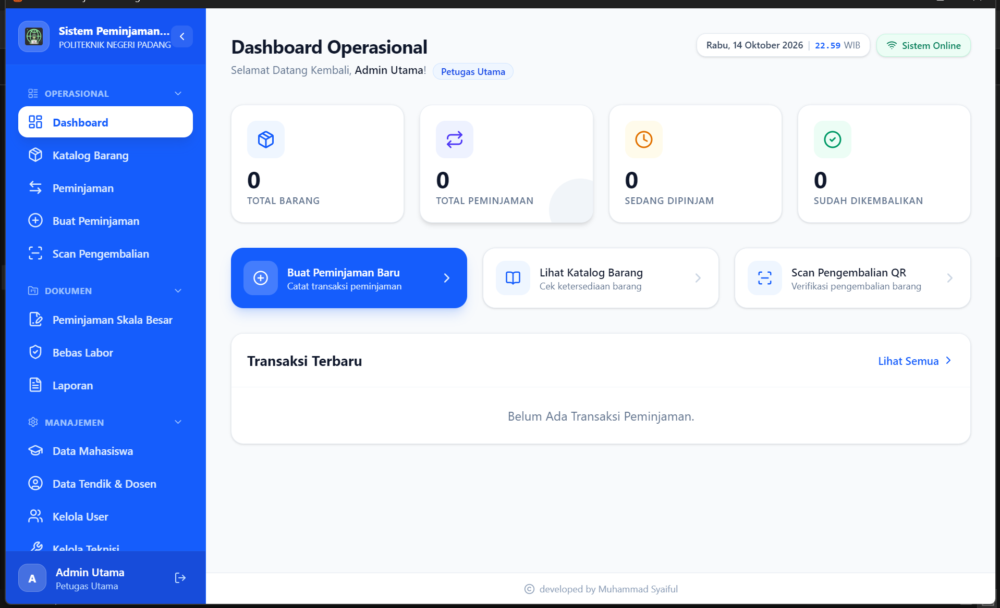
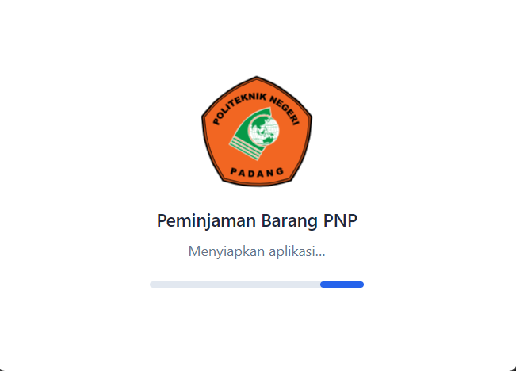
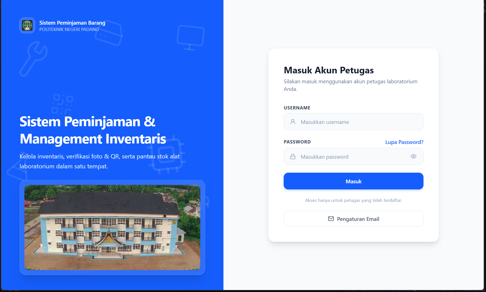
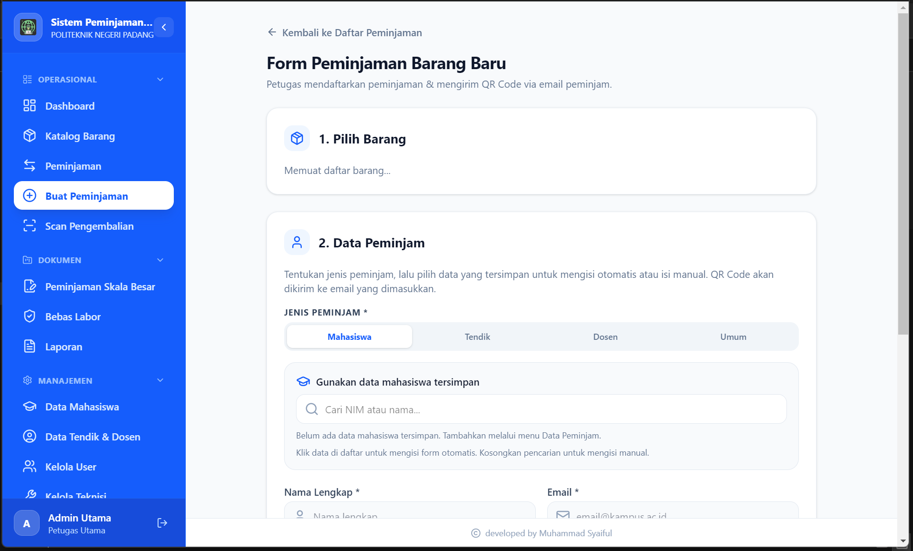
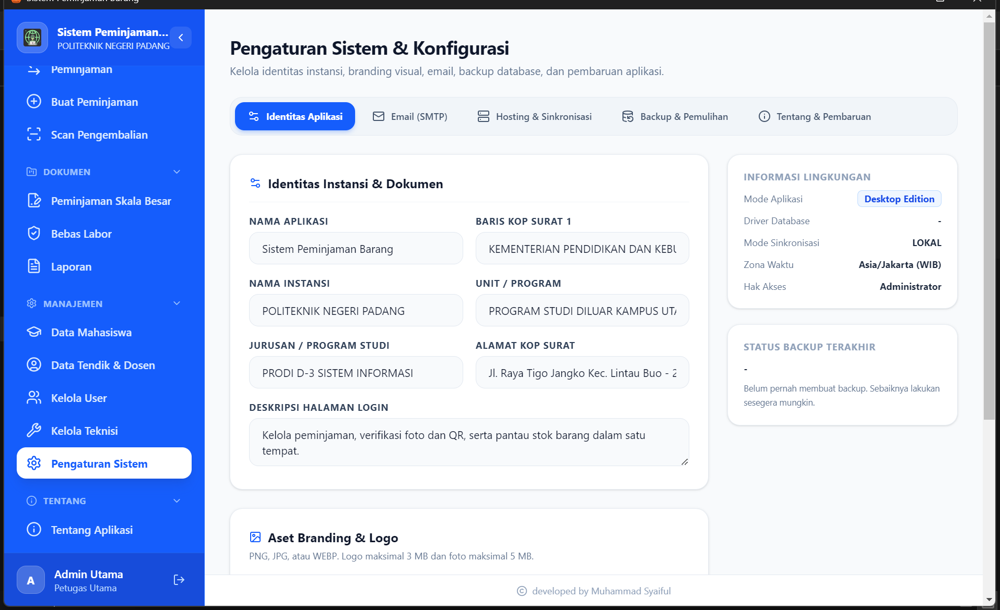

Inventaris & stok akurat
Kode unik, kategori, stok, dan gambar barang. Stok dikunci atomik saat peminjaman dibuat.
Aplikasi desktop untuk inventaris, peminjaman multi-barang, pengembalian dengan verifikasi foto & kondisi, peminjaman resmi (surat), laporan resmi, serta bukti transaksi berbasis QR Code + email. Peminjam tidak membuat akun — petugas yang mencatat dan menyerahkan barang.
Installer untuk Windows 10/11 (64-bit), butuh ruang kosong minimal 1 GB.


Klik salah satu foto untuk melihat layar penuh.



Semua kebutuhan laboratorium dalam satu aplikasi desktop.
Kode unik, kategori, stok, dan gambar barang. Stok dikunci atomik saat peminjaman dibuat.
Satu transaksi bisa berisi beberapa jenis barang dengan jumlah unit berbeda.
Email memuat QR Code langsung, kode peminjaman, dan lampiran PDF bukti.
Scan QR atau kode peminjaman, pilih kondisi barang, lalu foto bukti pengembalian.
Surat peminjaman skala besar, surat bebas/tanggungan labor, dan laporan PDF resmi.
Mahasiswa, tendik, dosen, dan umum — lengkap dengan impor spreadsheet Google Sheets.
Aplikasi cek versi baru di latar belakang dan memasang pembaruan secara senyap.
Backup mingguan otomatis (database + foto) dan pemulihan data dengan satu klik.
PHP dan database SQLite sudah disertakan. Tidak perlu Laragon, XAMPP, atau MySQL.
Alur peminjaman barang dari pencatatan sampai pengembalian.
Selalu mengambil versi terbaru dari GitHub Releases secara otomatis.
Catatan perubahan aplikasi beserta jumlah unduhan.
Memuat riwayat rilis…
Windows 10 atau 11 versi 64-bit, ruang penyimpanan minimal 1 GB, dan koneksi internet untuk pengiriman email serta pembaruan aplikasi. Kamera dipakai lewat browser sehingga memerlukan izin kamera.
Tidak. Aplikasi sudah membawa PHP runtime dan memakai database SQLite lokal, sehingga komputer petugas bisa langsung dipakai tanpa server tambahan.
Pembaruan diperiksa di latar belakang (±20 detik setelah aplikasi siap, lalu tiap 4 jam).Saat versi baru tersedia, pilih Unduh & Instal; aplikasi lalu memasang versi baru secara senyap dan membuka kembali. Pemeriksaan manual tersedia dari menu aplikasi.
Akun awal dibuat otomatis saat pemasangan (admin / password). Admin dapat menambah akun petugas lain melalui menu Kelola User. Ganti password awal segera setelah masuk.
Email diperlukan untuk mengirim QR Code dan bukti peminjaman kepada peminjam. Pengaturan dilakukan sekali lewat tombol Pengaturan Email pada halaman login, lalu diuji dengan email percobaan.
Backup berjalan otomatis setiap 7 hari dengan pengingat untuk admin, dan dapat diunduh manual pada Pengaturan Sistem → Backup (arsip .zip berisi database dan seluruh foto). Pemulihan memakai berkas yang sama dengan password admin.
Seluruh data dan database tersimpan pada folder %APPDATA%\Peminjaman Barang PNP. Untuk recovering manual, tutup aplikasi lalu salin folder tersebut ke media penyimpanan lain.
Installer ini memuat runtime PHP, backend, dan frontend secara utuh agar aplikasi bisa berjalan langsung di komputer petugas tanpa instalasi tambahan.
Aplikasi ini merupakan perangkat lunak proprietary. Politeknik Negeri Padang (Jurusan Teknologi Informasi) menggunakan aplikasi ini secara gratis berdasarkan hibah non-eksklusif. Institutesi atau pihak lain memerlukan perjanjian lisensi tertulis.